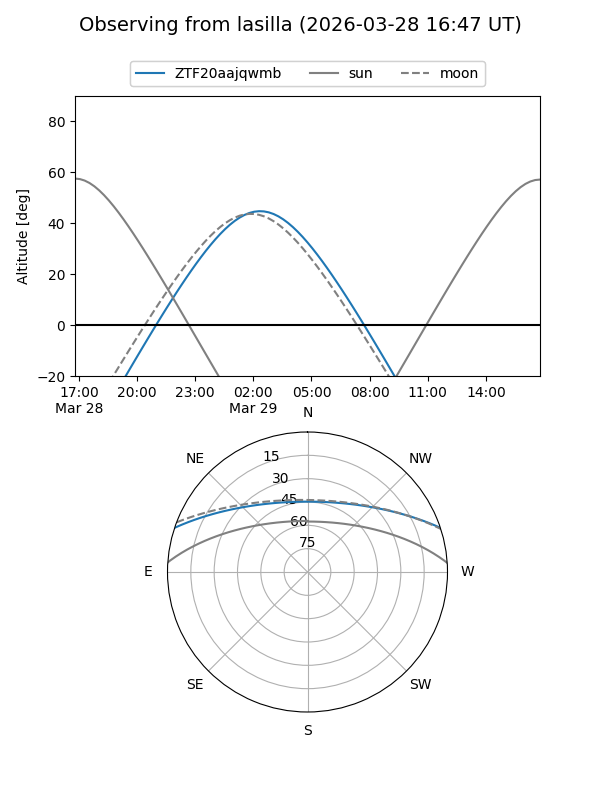
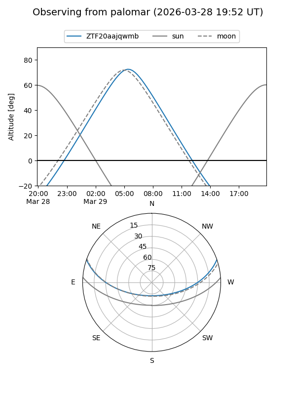

ZTF20aajqwmb
Target ZTF20aajqwmb at 2026-03-29 05:25
Aliases and brokers:
FINK: link
Lasair: link
ALeRCE: link
alt names
ZTF20aajqwmb (ztf,fink_ztf)
Coordinates:
equatorial (ra, dec) = 150.6389,+16.11626
equatorial (HMS+DMS) = 10:02:33.34,+16:06:58.53
galactic (l, b) = (219.7656,+49.44357)
Flags:
Photometry:
last ztfg=16.64, ztfr=16.02
1 ztfg, 1 ztfr detections
Lightcurve
Visibility


Additional plots